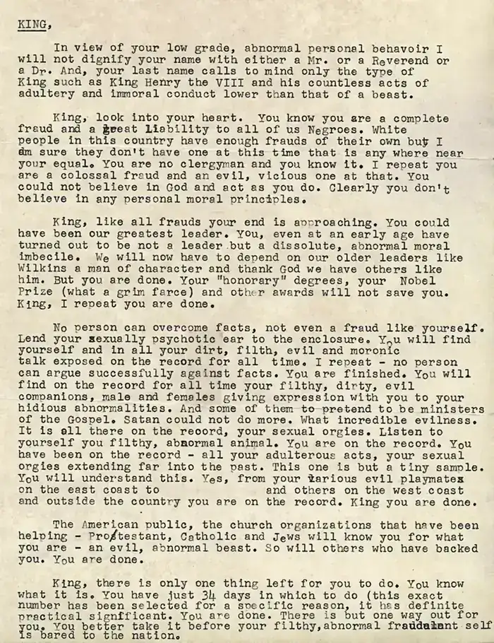
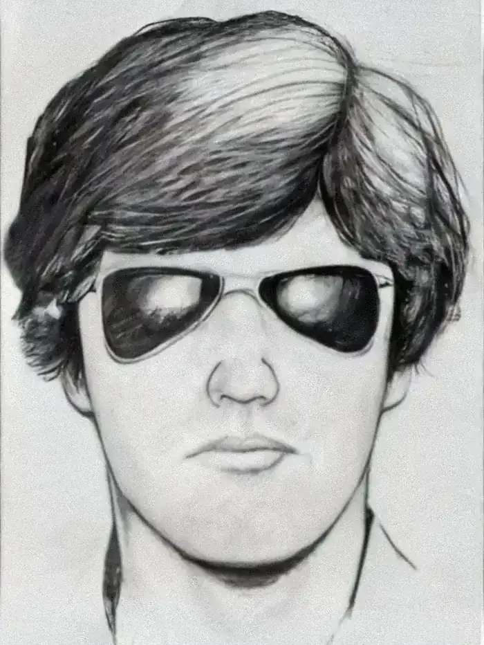
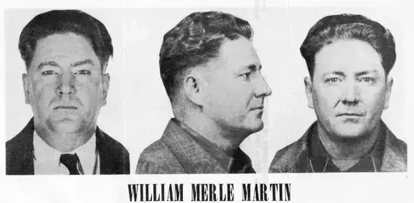

The campaign
From the mid-1950s, the FBI under J. Edgar Hoover monitored Martin Luther King Jr, initially through the Communist Party investigation and then as a target in his own right. The Bureau wiretapped his phones, bugged hotel rooms, and compiled a file on his political and sexual life.
Maps, diagrams and images






The letter
In 1964, after King received the Nobel Peace Prize, the Bureau sent an anonymous letter to his address, combining surveillance material with a suggestion that he kill himself; King's associates treated it as an attempt at blackmail. The letter was disclosed in the 1970s by the Senate's Church Committee.
The campaign was documented in the Church Committee's 1976 report, which found that the Bureau had sought to 'neutralize' King as a political figure. Hoover's deputy, William Sullivan, later acknowledged the letter's authorship.
Documented: the surveillance, the files and the letter.
Documented: the authorisation at senior level.
Documented: the Church Committee's findings.
Not established: every purpose behind the campaign.
The label: documented.
Why it is in the archive
Because it is the clearest case of a state agency using surveillance against a domestic political figure, and because the Bureau's own files are the evidence.
Open resources on this topic
- BookThe FBI and Martin Luther King, Jr. : from "Solo" to Memphis — Garrow, David J., 1953- · 1981 (Internet Archive, free to read)
- BookThe FBI And Martin Luther King (Internet Archive, free to read)
- BookThe FBI and Martin Luther King, Jr. — Garrow, David J., 1953- author · 1983 (Internet Archive, free to read)
- PapersOpen-access articles: DOAJ · PubMed Central · Internet Archive Scholar
- BooksPublic-domain and borrowable copies: Open Library · Project Gutenberg · Google Books
Cite this page
Momin, S. (2026). The FBI and Martin Luther King. The Larger World Archive. https://drsamonline.github.io/LARGE_GLOBE/fbi-mlk.htmlMomin, Sohil. “The FBI and Martin Luther King.” The Larger World Archive, 2026, https://drsamonline.github.io/LARGE_GLOBE/fbi-mlk.html.Momin, Sohil. “The FBI and Martin Luther King.” The Larger World Archive, 2026. https://drsamonline.github.io/LARGE_GLOBE/fbi-mlk.html.@misc{the2026fbi,
author = {Momin, Sohil},
title = {The FBI and Martin Luther King},
year = {2026},
howpublished = {The Larger World Archive},
url = {https://drsamonline.github.io/LARGE_GLOBE/fbi-mlk.html},
note = {Last reviewed 20 November 2026}
}Last reviewed 20 November 2026 · Corrections policy · this page is not peer reviewed
Sources for this page
- Wikipedia, “COINTELPRO” — the programmeen.wikipedia.org
- Wikipedia, “Martin Luther King Jr.” — the targeten.wikipedia.org
- Wikipedia, “Church Committee” — the investigationen.wikipedia.org
- Wikipedia, “J. Edgar Hoover” — the directoren.wikipedia.org